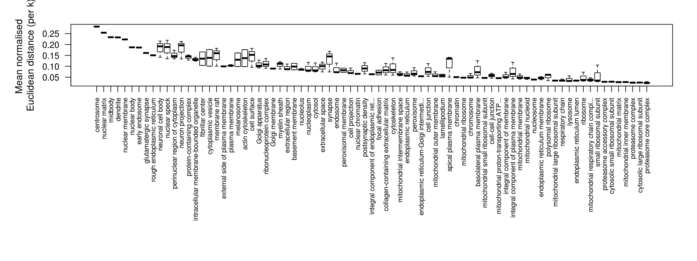
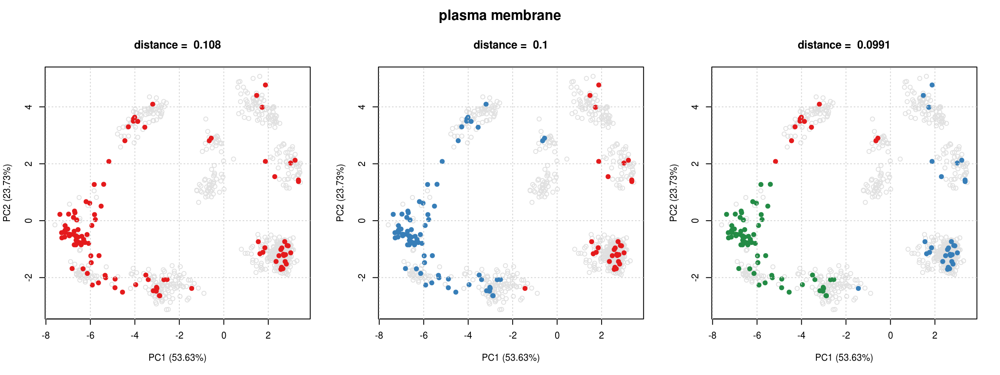

vignettes/v04-pRoloc-goannotations.Rmd
v04-pRoloc-goannotations.RmdThis document walks users through a typical pipeline for adding annotation information to spatial proteomics data. For a general practical introduction to pRoloc and spatial proteomics data analysis, readers are referred to the tutorial, available using vignette("pRoloc-tutorial", package = "pRoloc").
Exploring protein annotations and defining sub-cellular localisation markers (i.e. known residents of a specific sub-cellular niche in a species, under a condition of interest) play important roles in the analysis of spatial proteomics data. The latter is essential for downstream supervised machine learning (ML) classification for protein localisation prediction (see vignette("pRoloc-tutorial", package = "pRoloc") and vignette("pRoloc-ml", package = "pRoloc") for information on available ML methods) and the former is interesting for initial biological interpretation through matching annotations to the data structure.
Robust protein-localisation prediction is reliant on markers that reflect the true sub-cellular diversity of the multivariate data. The validity of markers is generally assured by expert curation. This can be time consuming and difficult owing to the limited number of marker proteins that exist in databases and elsewhere. The Gene Ontology (GO) database, and in particular the cellular compartment (CC) namespace provide a good starting point for protein annotation and marker definition. Nevertheless, automatic extraction from databases, and in particular GO CC, is only a first step in sub-cellular localisation analysis and requires additional curation to counter unreliable annotation based on data that is inaccurate or out of context for the biological question under investigation.
To facilitate the above, we have developed an annotation retrieval and management system that provides a flexible framework for the exploration of the sub-cellular proteomics data. We have developed a method to correlate annotation information with the multivariate data space to identify densely annotated regions and assess cluster tightness. Given a set of proteins that share some property e.g. a specified GO term, a k-means clustering is used to fit the data (testing k = 1:5) and then for each number of k components tested, all pairwise Euclidean distances are calculated per component, and then normalised. The minimum mean normalised distance is then extracted and used as a measure of cluster tightness. This is repeated for all protein/annotation sets. These sets are then ranked according to minimum mean normalised distance and then can be displayed and explored using the pRolocGUI package.
In this vignette we present a step-by-step guide showing users how to (1) how to add protein annotations, here we use the GO database as an example, and (2) rank and order information (e.g. GO terms) according to their correlation with the data structure, for the extraction of optimal data specific annotated clusters.
We will demonstrate our pipeline for adding and ranking annotation information using a LOPIT experiment on Pluripotent Mouse Embryonic stems (Christoforou et al 2016), available and documented in the pRolocdata data package as hyperlopit2015.
All GO terms associated to proteins that appear in the dataset are retrieved and used to create a binary matrix where a 1 (0) at position \((i,j)\) indicates that term \(j\) has (not) been used to annotate feature \(i\). This matrix is appended and stored in the feature data slot of the MSnSet dataset using the addGoAnnotations function. We first however need to prepare annotation parameters that will enable us to query the Biomart repository using the package, from where we are able to retrieve GO terms. The specific Biomart repository and query will depend on the species under study and the type of features. This can be set using the setAnnotationParams function.
In the code chunk below we set the annotation parameters for the hyperLOPIT2015 dataset. As this species used was mouse and the featureNames of the hyperLOPIT2015 dataset are Uniprot accession numbers the input to the function is defined as inputs = c("Mus musculus", "UniProtKB/Swiss-Prot ID"). See ?setAnnotationParams for details.
## Using species Mus musculus genes (GRCm38.p4)## Using feature type UniProtKB/Swiss-Prot ID(s) [e.g. A0A087WPF7]## Connecting to Biomart...Now the parameters for the search have been defined we can use the addGoAnnotations function to add a GO information matrix to the featureData slot of the dataset. The addGoAnnotations function takes a MSnSet instance as input (from which the featureNames will be extracted) and it downloads the CC terms (the default, biological process and the molecular function namespaces are also supported) found for each protein in the dataset. The output MSnSet has the CC term binary matrix appended to the fData, by default this is called GOAnnotations (and changed using the fcol argument).
## [1] "entry.name" "protein.description"
## [3] "peptides.rep1" "peptides.rep2"
## [5] "psms.rep1" "psms.rep2"
## [7] "phenodisco.input" "phenodisco.output"
## [9] "curated.phenodisco.output" "markers"
## [11] "svm.classification" "svm.score"
## [13] "svm.top.quartile" "final.assignment"
## [15] "first.evidence" "curated.organelles"
## [17] "cytoskeletal.components" "trafficking.proteins"
## [19] "protein.complexes" "signalling.cascades"
## [21] "oct4.interactome" "nanog.interactome"
## [23] "sox2.interactome" "cell.surface.proteins"
## [25] "markers2015" "TAGM"
## [27] "GOAnnotations"The addGoAnnotations function by defualt does not do any filtering of the terms evidence codes unless specified in the evidence argument, see ?addGoAnnotations for more details.
With many well-annotated species and datasets containing typically thousands of proteins, we often find many CC terms, of which many may not be particularly meaningful. These such terms can be filtered out using the filerMinMarkers and filterMaxMarkers functions.
Now we have extracted and filtered annotation information for our dataset we re-order the GOAnnotations matrix of terms according to their correlation with the dataset structure. To do this we use the orderGoAnnotations function.
For each piece of annotation information, e.g. for each GO CC term in the matrix, the function:
k component clusters to this subset using the kmeans algorithm (the default to test is k = 1:5).p)GOAnnotations according to the minimum normalised Euclidean distance.We find that high density clusters have the low mean normalised Euclidean distances. In the below chunk we test try fitting k = 1:3 component clusters per term and normalise by p = 1/3. The ordered terms can be displayed using the pRolocVis function in the pRolocGUI package.
## Extract markers can use n to specify to select top n terms
res <- orderGoAnnotations(cc, k = 1:3, p = 1/3, verbose = FALSE)## Calculating GO cluster densitiesInstead of using the orderGoAnnotations function which is a wrapper for steps 1 - 5 above, it is possible to calculate the Euclidean distances manually using the clustDist function. The input is a MSnSet dataset with the matrix of markers e.g. GOAnnotations appended to the fData slot. The output is a "ClustDistList". The "ClustDist" and "ClustDistList" class summarises the algorithm information such as the number of k’s tested for the kmeans, and mean and normalised pairwise Euclidean distances per numer of component clusters tested.
## Now calculate distances
dd <- clustDist(cc, fcol = "GOAnnotations", k = 1:3, verbose = FALSE)
dd[[1]]## Object of class "ClustDist"
## fcol = GOAnnotations
## term = GO:0005886
## id = plasma membrane
## nrow = 114
## k's tested: 1 2 3
## Size: 114
## Size: 79, 35
## Size: 23, 12, 79
## Clusters info:
## ks.mean mean ks.norm norm
## k = 1 1 0.5175 1 0.1067
## k = 2 2 0.3733 2 *0.1015
## k = 3 3 *0.3164 3 0.1098We can use the plotClustDist and plotComponents to visualise these results.


The output of plotClustDist is a boxplot of the normalised distances per term and the output of plotComponents is a set of principal components analysis (PCA) plots, one for each k tested, highlighting the component clusters found according to the kmeans algorithm.
The getNormDist function can be used to extract a vector of normalised distances. Which can then be used to rank and order the terms in the GOAnnotations matrix, as per the code chunk below.
## Normalise by n^1/3
minDist <- getNormDist(dd, p = 1/3)
## Get new order according to lowest distance
o <- order(minDist)
## Re-order `GOAnnotations` matrix in `fData`
fData(cc)$GOAnnotations <- fData(cc)$GOAnnotations[, o]Finally, we can use the pRolocVis function in pRolocGUI to visualise our clusters.